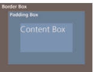

1半透明边框
背景知识
RGBA/HSLA颜色
如果将框架div元素的背景颜色设置为white，边框不可看见
默认情况下背景会延伸到边框所在的区域下层
可以通过background-clip属性来调整上述默认行为带来的不变
border-box:默认值，背景绘制在边框方框内
padding-box:背景绘制在衬距方框内
content-box:背景绘制在内容边框内
2多重边框
背景知识
box-shadow的基本用法
box-shadow: h-shadow v-shadow blur spread color inset;
box-shadow支持逗号分隔语法，可以创建任意数量的投影
box-shadow是层层叠加的,第一层投影位于最顶层，依次类推
注意
投影的因为跟边框不完全一致，因为他不会影响布局，而且也不会受box-sizing属性的影响。可以用通过内边距或外边距（这个屈居于投影是内嵌还是外扩的）来额外模拟出边框需要占据的控件
不影响鼠标事件，计入悬停或点击。可以给box-shadow属性加上inset关键字，使投影绘制在元素的内圈，此时需要添加额外得内边距来腾出足够的空隙。
outline方案
如果只需要两层边框，可以使用一层常规边框，再加上outline属性来产生外层的边框。
使用outline-offset属性控制它跟元素边缘之间的间距，接受复制
优点：box-shadow只能模拟实线边框，outline可以产生虚线边框
- outline不能接受用逗号分隔的多个值
- 边框比一定会贴合border-radius属性产生的圆角
- 兼容性欠佳
缺点
3背景定位
背景知识
background-position
指定背景图片距离任意角的偏移量
background-position: right 20px bottom 10px;
有些浏览器并兼容上述样式，应该提供一个回退方案,如：
background:url(code-pirate.svg) no-repeat bttom right #58a;background-position: right 20px bottom 10px;
如：background-position: top left;这个左上角到底是哪个，可以使用bakcground-origin来设置
background-origin:border-box/pading-box/content-box
4边框内圆角
背景知识
box-shadow,outline,"多重边框"
box-shadow: 0 0 0 .8rem #6D5E58;
box-shadow的宽度要比(根号2-1)*圆角半径长
5条纹背景
背景知识
CSS线性渐变，background-size
background:linear-gradient(#fb3,#58a);
background:linear-gradient(#fb3 20%, #58a 80%);便是容器顶部的20%区域被填充为#fb3实色，而底部20%区域被填充为#58a实色，真正的渐变只出现在容日中间60%的高度区域中，如果把两个色标继续拉近，那真正的渐变区域就变得更窄了
当前背景是两个色标重合在一起，如果把第二个色标的位置设置为0，那它的位置就总是会被浏览器调整为前一个色标的位置值。也可以创建不全等的条纹：background: linear-gradient( #fb3 30%,#58a 30% );
click me把条纹方向向左
background: linear-gradient( to right,#fb3 50%,#58a 50%);
click me把条纹生成三种颜色的条纹
background: linear-gradient( #fb3 33.30%,#58a 0,#58a 66.6%,yellowgreen 0);
click me条纹45deg
background: linear-gradient( 45deg, #fb3 25%,#58a 0,#58a 50%,#fb3 0, #fb3 75%,#58a 0);
click me条纹60deg
background: repeating-linear-gradient( 45deg, #fb3,#fb3 15px,#58a 0,#58a 30px );
click me网格条纹
background-image:linear-gradient( 90deg, rgba(200,0,0,.5) 50%, transparent 0 ),linear-gradient( rgba(200,0,0,.5) 50%, transparent 0 );
click me重复圆圈背景
radial-gradient( tan 30%, transparent 0 ),radial-gradient(tan 30%, transparent 0);